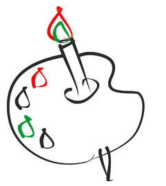

За рулем сижу довольный - Ездить просто и легко! Только руль чуть-чуть огромный И педали далеко.
Мне купили паровозик, Сразу два вагона возит. Я включу его, и он За собой везет вагон. Вот бы мне в нем прокатиться, Только жаль - не поместиться.
Нарисую я в альбоме Голубое море, Белый парус над волною Бьется на просторе.